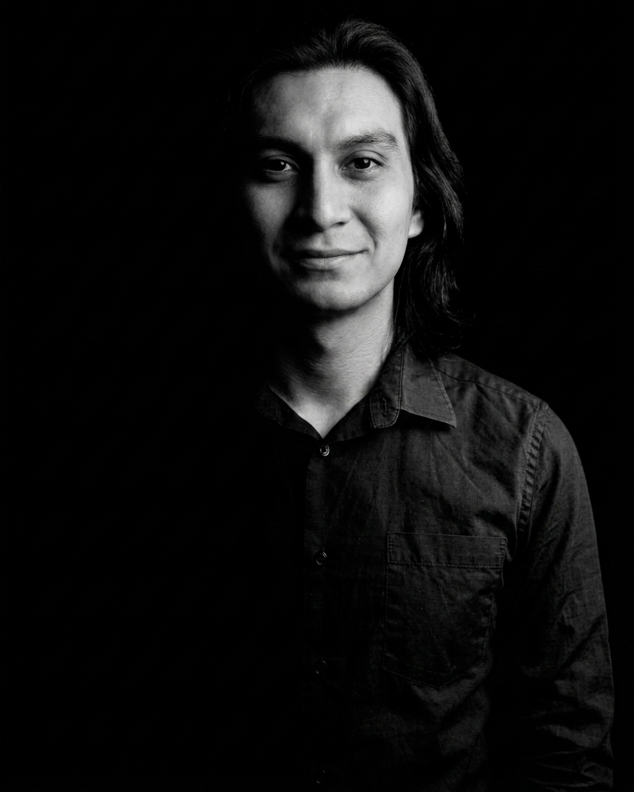

Sobre mi
davidorjuela.carrero@gmail.com
Diseñador gráfico con experiencia en el desarrollo de piezas impresas, digitales y audiovisuales para comunicación y posicionamiento de marca. Manejo herramientas como Adobe Creative Suite, Figma, Visual Studio Code y Blender, participando en procesos de maquetación, artes finales, identidad visual, desarrollo de empaques, material POP, creación de Key Visual (KV) y diseño de piezas para campañas ATL y BTL.
Cuento con experiencia en producción y postproducción audiovisual, incluyendo fotografía, video, edición y adaptación de contenidos para diferentes plataformas. He participado en la creación de visuales comerciales y propuestas para clientes, integrando soluciones gráficas y audiovisuales. Me caracterizo por mi capacidad de adaptación, organización, compromiso y orientación al detalle, aportando valor en entornos creativos y de producción.
